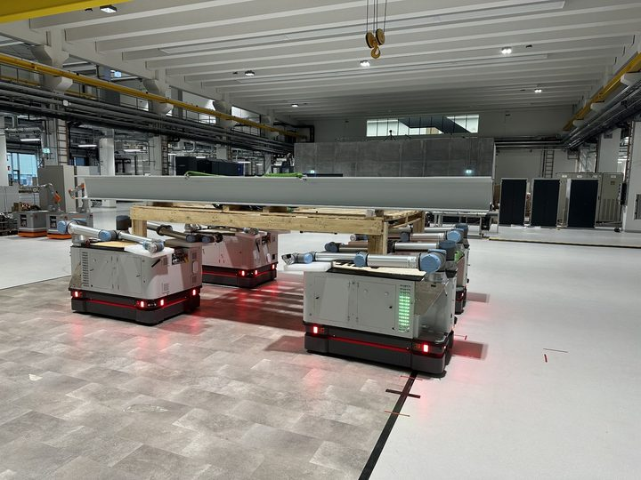

Home
Dr.-Ing. Tobias Recker
I develop scalable cooperative mobile multi-robot systems for industrial handling, assembly, and construction automation.
I design control, path-planning, and system-integration approaches that allow multiple mobile robots and mobile manipulators to cooperate as one adaptable robotic system — especially for large-scale components that are difficult to handle with a single robot.

Research focus
My work is centered on robotic systems that become more useful when they cooperate: robots that share objects, coordinate motion, and scale with task size instead of being designed as single-purpose machines.
Cooperative mobile multi-robot systems
Scalable control frameworks for mobile robots and mobile manipulators that jointly transport, handle, and assemble large-scale components.
Mobile manipulation and control
Coordination of mobile platforms and robotic arms, including formation control, trajectory planning, and whole-body control.
Automation for construction and production
Robotic automation for flexible manufacturing, large-scale assembly, and mobile additive manufacturing.
Featured projects

Cooperative object handling
Multiple mobile manipulators jointly grasp and move one object in a spatial workspace.

Cooperative object transport
Mobile platforms coordinate formation motion to transport large industrial components.

Selected publication
Scaling Cooperative Mobile Multi-Robot Systems for Object Handling
Tobias Recker, Lukas Lachmayer, Annika Raatz. 2025 IEEE 21st International Conference on Automation Science and Engineering (CASE), Los Angeles, CA, USA, pp. 2562-2567.
This paper presents and evaluates a scalable cooperative mobile multi-robot framework for object handling with multiple mobile manipulators.
Dissertation
Scaling of Cooperative Mobile Multi-Robot Systems for Handling and Assembly of Large-Scale Components
My dissertation investigates a scalable CMMRS framework for collaborative object handling and assembly tasks in industrial settings. It combines a hardware-agnostic control structure with path planning and experimental validation across transport, handling, and assembly-related scenarios.